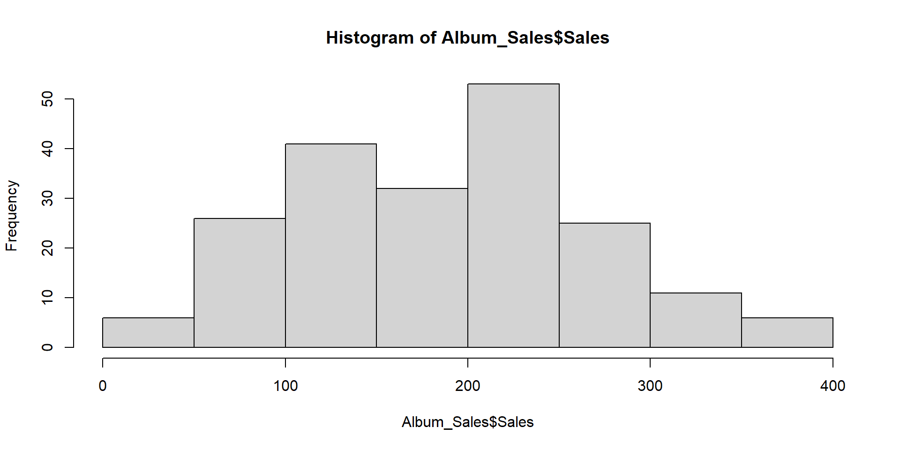

Descriptive Statistics with R
Advanced Psychological Research Methods
Dr Christopher Wilson
Questions about last week’s session?
</section> <section id="lets-import-the-data" class="slide level2"> <h2>Let’s import the data</h2> <div class="cell"> <div class="sourceCode" id="cb1"><pre class="sourceCode numberSource r cell-code number-lines"><code class="sourceCode r"><span id="cb1-1"><a href="#cb1-1"></a><span class="fu">library</span>(<span class="st">"tidyverse"</span>)</span> <span id="cb1-2"><a href="#cb1-2"></a>Album_Sales <span class="ot"><-</span> <span class="fu">read_csv</span>(<span class="st">"Datasets/album_sales.csv"</span>)</span></code></pre></div> </div> </section> <section id="lets-look-at-the-data" class="slide level2"> <h2>Let’s look at the data</h2> <div class="cell"> <div class="sourceCode" id="cb2"><pre class="sourceCode numberSource r cell-code number-lines"><code class="sourceCode r"><span id="cb2-1"><a href="#cb2-1"></a><span class="fu">head</span>(Album_Sales)</span></code></pre></div> <div class="cell-output cell-output-stdout"> <pre><code># A tibble: 6 × 5 Adverts Sales Airplay Attract Genre <dbl> <dbl> <dbl> <dbl> <chr> 1 10.3 330 43 10 Country 2 986. 120 28 7 Pop 3 1446. 360 35 7 HipHop 4 1188. 270 33 7 HipHop 5 575. 220 44 5 Metal 6 569. 170 19 5 Country</code></pre> </div> </div> </section> <section id="lets-make-sure-our-data-types-are-correct-1" class="slide level2"> <h2>Let’s make sure our data types are correct #1</h2> <ul> <li>This variable is currently stored as charcters, not as a factor / category variable</li> </ul> <div class="cell"> <div class="sourceCode" id="cb4"><pre class="sourceCode numberSource r cell-code number-lines"><code class="sourceCode r"><span id="cb4-1"><a href="#cb4-1"></a><span class="fu">str</span>(Album_Sales<span class="sc">$</span>Genre) </span></code></pre></div> <div class="cell-output cell-output-stdout"> <pre><code> chr [1:200] "Country" "Pop" "HipHop" "HipHop" "Metal" "Country" "Pop" ...</code></pre> </div> </div> </section> <section id="lets-make-sure-our-data-types-are-correct-2" class="slide level2"> <h2>Let’s make sure our data types are correct #2</h2> <ul> <li>We can save it as a factor</li> </ul> <div class="cell"> <div class="sourceCode" id="cb6"><pre class="sourceCode numberSource r cell-code number-lines"><code class="sourceCode r"><span id="cb6-1"><a href="#cb6-1"></a>Album_Sales<span class="sc">$</span>Genre <span class="ot"><-</span> <span class="fu">as.factor</span>(Album_Sales<span class="sc">$</span>Genre)</span> <span id="cb6-2"><a href="#cb6-2"></a></span> <span id="cb6-3"><a href="#cb6-3"></a><span class="fu">str</span>(Album_Sales<span class="sc">$</span>Genre) </span></code></pre></div> <div class="cell-output cell-output-stdout"> <pre><code> Factor w/ 4 levels "Country","HipHop",..: 1 4 2 2 3 1 4 4 3 2 ...</code></pre> </div> </div> </section> <section> <section id="summarising-data-central-tendency" class="title-slide slide level1"> <h1>Summarising data: Central tendency</h1> </section> <section id="measures-of-central-tendency" class="slide level2"> <h2>Measures of central tendency</h2> <p>The main measures of central tendency are:</p> <ul> <li>Mean</li> <li>Median</li> <li>Mode</li> </ul> </section> <section id="mean" class="slide level2"> <h2>Mean</h2> <p>“What is the mean of album sales?”</p> <div class="cell"> <div class="sourceCode" id="cb8"><pre class="sourceCode numberSource r cell-code number-lines"><code class="sourceCode r"><span id="cb8-1"><a href="#cb8-1"></a><span class="fu">mean</span>(Album_Sales<span class="sc">$</span>Sales)</span></code></pre></div> <div class="cell-output cell-output-stdout"> <pre><code>[1] 193.2</code></pre> </div> </div> </section> <section id="trimmed-mean" class="slide level2"> <h2>Trimmed mean</h2> <ul> <li>The trimmed mean is used to reduce the influence of outliers on the summary</li> </ul> <div class="cell"> <div class="sourceCode" id="cb10"><pre class="sourceCode numberSource r cell-code number-lines"><code class="sourceCode r"><span id="cb10-1"><a href="#cb10-1"></a><span class="fu">mean</span>(Album_Sales<span class="sc">$</span>Sales, <span class="at">trim =</span> <span class="fl">0.05</span>)</span></code></pre></div> <div class="cell-output cell-output-stdout"> <pre><code>[1] 192.6667</code></pre> </div> </div> </section> <section id="median" class="slide level2"> <h2>Median</h2> <p>“What is the median amount of Airplay?”</p> <div class="cell"> <div class="sourceCode" id="cb12"><pre class="sourceCode numberSource r cell-code number-lines"><code class="sourceCode r"><span id="cb12-1"><a href="#cb12-1"></a><span class="fu">median</span>(Album_Sales<span class="sc">$</span>Airplay)</span></code></pre></div> <div class="cell-output cell-output-stdout"> <pre><code>[1] 28</code></pre> </div> </div> </section> <section id="mode" class="slide level2"> <h2>Mode</h2> <p>“What is the most common attractiveness rating of bands?”</p> <ul> <li>The easiest way to get the mode in R is to generate a frequency table</li> </ul> <div class="cell"> <div class="sourceCode" id="cb14"><pre class="sourceCode numberSource r cell-code number-lines"><code class="sourceCode r"><span id="cb14-1"><a href="#cb14-1"></a><span class="fu">table</span>(Album_Sales<span class="sc">$</span>Attract)</span></code></pre></div> <div class="cell-output cell-output-stdout"> <pre><code> 1 2 3 4 5 6 7 8 9 10 3 1 1 4 17 44 73 44 12 1 </code></pre> </div> </div> <ul> <li>We can then look for the most frequently occuring response</li> </ul> </section></section> <section> <section id="measures-of-dispersion-or-variance" class="title-slide slide level1"> <h1>Measures of dispersion or variance</h1> </section> <section id="range" class="slide level2"> <h2>Range</h2> <p>The range is the difference between the lowest and highest values</p> <ul> <li>You can calculate it using these values</li> </ul> <div class="cell"> <div class="sourceCode" id="cb16"><pre class="sourceCode numberSource r cell-code number-lines"><code class="sourceCode r"><span id="cb16-1"><a href="#cb16-1"></a><span class="fu">max</span>(Album_Sales<span class="sc">$</span>Airplay) <span class="sc">-</span> <span class="fu">min</span>(Album_Sales<span class="sc">$</span>Airplay)</span></code></pre></div> <div class="cell-output cell-output-stdout"> <pre><code>[1] 63</code></pre> </div> </div> <ul> <li>Or you can use the range command to get the min and max values in one go</li> </ul> <div class="cell"> <div class="sourceCode" id="cb18"><pre class="sourceCode numberSource r cell-code number-lines"><code class="sourceCode r"><span id="cb18-1"><a href="#cb18-1"></a><span class="fu">range</span>(Album_Sales<span class="sc">$</span>Airplay)</span></code></pre></div> <div class="cell-output cell-output-stdout"> <pre><code>[1] 0 63</code></pre> </div> </div> </section> <section id="interquartile-range" class="slide level2"> <h2>Interquartile range</h2> <ul> <li>We know that the median is the “middle” of the data = 50th percentile</li> <li>The interquatile range is the difference between the values at the 25th and 75th percentiles</li> </ul> <div class="cell"> <div class="sourceCode" id="cb20"><pre class="sourceCode numberSource r cell-code number-lines"><code class="sourceCode r"><span id="cb20-1"><a href="#cb20-1"></a><span class="fu">quantile</span>( <span class="at">x =</span> Album_Sales<span class="sc">$</span>Airplay, <span class="at">probs =</span> <span class="fu">c</span>(.<span class="dv">25</span>,.<span class="dv">75</span>) )</span></code></pre></div> <div class="cell-output cell-output-stdout"> <pre><code> 25% 75% 19.75 36.00 </code></pre> </div> </div> <ul> <li>Interquartile range = 36 - 19.75 = 16.25</li> </ul> </section> <section id="sum-of-squares" class="slide level2"> <h2>Sum of squares</h2> <ul> <li>The difference between each value and the mean value, squared, and then summed together</li> </ul> <div class="cell"> <div class="sourceCode" id="cb22"><pre class="sourceCode numberSource r cell-code number-lines"><code class="sourceCode r"><span id="cb22-1"><a href="#cb22-1"></a><span class="fu">sum</span>( (Album_Sales<span class="sc">$</span>Adverts <span class="sc">-</span> <span class="fu">mean</span>(Album_Sales<span class="sc">$</span>Adverts))<span class="sc">^</span><span class="dv">2</span> )</span></code></pre></div> <div class="cell-output cell-output-stdout"> <pre><code>[1] 46936335</code></pre> </div> </div> </section> <section id="variance" class="slide level2"> <h2>Variance</h2> <ul> <li>Variance: Sum of sqaures divided by n-1</li> </ul> <div class="cell"> <div class="sourceCode" id="cb24"><pre class="sourceCode numberSource r cell-code number-lines"><code class="sourceCode r"><span id="cb24-1"><a href="#cb24-1"></a><span class="co"># variance calculation</span></span> <span id="cb24-2"><a href="#cb24-2"></a>varianceAdverts <span class="ot"><-</span> <span class="fu">sum</span>( (Album_Sales<span class="sc">$</span>Adverts <span class="sc">-</span> <span class="fu">mean</span>(Album_Sales<span class="sc">$</span>Adverts))<span class="sc">^</span><span class="dv">2</span> ) <span class="sc">/</span> <span class="dv">199</span></span></code></pre></div> </div> </section> <section id="standard-deviation" class="slide level2"> <h2>Standard deviation</h2> <ul> <li>Standard deviation is square root of the variance</li> </ul> <div class="cell"> <div class="sourceCode" id="cb25"><pre class="sourceCode numberSource r cell-code number-lines"><code class="sourceCode r"><span id="cb25-1"><a href="#cb25-1"></a><span class="co"># sd calculation</span></span> <span id="cb25-2"><a href="#cb25-2"></a></span> <span id="cb25-3"><a href="#cb25-3"></a></span> <span id="cb25-4"><a href="#cb25-4"></a><span class="fu">sqrt</span>(varianceAdverts)</span></code></pre></div> <div class="cell-output cell-output-stdout"> <pre><code>[1] 485.6552</code></pre> </div> </div> <ul> <li>Can be calculated using the sd() command</li> </ul> <div class="cell"> <div class="sourceCode" id="cb27"><pre class="sourceCode numberSource r cell-code number-lines"><code class="sourceCode r"><span id="cb27-1"><a href="#cb27-1"></a><span class="fu">sd</span>(Album_Sales<span class="sc">$</span>Adverts)</span></code></pre></div> <div class="cell-output cell-output-stdout"> <pre><code>[1] 485.6552</code></pre> </div> </div> </section> <section id="the-psych-package-includes-a-lot-of-useful-descriptive-stats" class="slide level2"> <h2>The <em>psych</em> package includes a lot of useful descriptive stats</h2> <div class="cell"> <div class="sourceCode" id="cb29"><pre class="sourceCode numberSource r cell-code number-lines"><code class="sourceCode r"><span id="cb29-1"><a href="#cb29-1"></a><span class="fu">library</span>(<span class="st">"psych"</span>)</span></code></pre></div> </div> </section></section> <section> <section id="skewness-and-kurtosis" class="title-slide slide level1"> <h1>Skewness and Kurtosis</h1> </section> <section id="assessing-skewness-of-distribution-1" class="slide level2"> <h2>Assessing skewness of distribution #1</h2> <ul> <li>It is possible to use graphs to view the distribution</li> <li>We will focus on graphic presentation of data next week</li> </ul> <div class="cell"> <div class="sourceCode" id="cb30"><pre class="sourceCode numberSource r cell-code number-lines"><code class="sourceCode r"><span id="cb30-1"><a href="#cb30-1"></a><span class="fu">hist</span>(Album_Sales<span class="sc">$</span>Sales)</span></code></pre></div> <div class="cell-output-display"> <p></p> </div> </div> </section> <section id="assessing-skewness-of-distribution-2" class="slide level2"> <h2>Assessing skewness of distribution #2</h2> <ul> <li>We can check raw skewness value using the <em>skew()</em> command in the <strong>psych</strong> package</li> </ul> <div class="cell"> <div class="sourceCode" id="cb31"><pre class="sourceCode numberSource r cell-code number-lines"><code class="sourceCode r"><span id="cb31-1"><a href="#cb31-1"></a><span class="fu">skew</span>(Album_Sales<span class="sc">$</span>Sales)</span></code></pre></div> <div class="cell-output cell-output-stdout"> <pre><code>[1] 0.0432729</code></pre> </div> </div> </section> <section id="kurtosis" class="slide level2"> <h2>Kurtosis</h2> <table> <thead> <tr class="header"> <th style="text-align: right;">informal term</th> <th style="text-align: right;">technical name</th> <th style="text-align: right;">kurtosis value</th> </tr> </thead> <tbody> <tr class="odd"> <td style="text-align: right;">“too flat”</td> <td style="text-align: right;">platykurtic</td> <td style="text-align: right;">negative</td> </tr> <tr class="even"> <td style="text-align: right;">“just pointy enough”</td> <td style="text-align: right;">mesokurtic</td> <td style="text-align: right;">zero</td> </tr> <tr class="odd"> <td style="text-align: right;">“too pointy”</td> <td style="text-align: right;">leptokurtic</td> <td style="text-align: right;">positive</td> </tr> </tbody> </table> <div class="cell"> <div class="sourceCode" id="cb33"><pre class="sourceCode numberSource r cell-code number-lines"><code class="sourceCode r"><span id="cb33-1"><a href="#cb33-1"></a><span class="fu">kurtosi</span>(Album_Sales<span class="sc">$</span>Sales)</span></code></pre></div> <div class="cell-output cell-output-stdout"> <pre><code>[1] -0.7157339</code></pre> </div> </div> </section> <section id="assessing-normality-of-distribution" class="slide level2"> <h2>Assessing normality of distribution</h2> <ul> <li>We can use the shapiro-wilk test of normality</li> <li>This is part of “base” r (no package needed)</li> </ul> <div class="cell"> <div class="sourceCode" id="cb35"><pre class="sourceCode numberSource r cell-code number-lines"><code class="sourceCode r"><span id="cb35-1"><a href="#cb35-1"></a><span class="fu">shapiro.test</span>(Album_Sales<span class="sc">$</span>Sales)</span></code></pre></div> <div class="cell-output cell-output-stdout"> <pre><code> Shapiro-Wilk normality test data: Album_Sales$Sales W = 0.98479, p-value = 0.02965</code></pre> </div> </div> </section></section> <section id="getting-an-overall-summary" class="title-slide slide level1"> <h1>Getting an overall summary</h1> </section> <section id="summary---in-base-r" class="title-slide slide level1"> <h1>summary() - in “base R”</h1> <div class="cell"> <div class="sourceCode" id="cb37"><pre class="sourceCode numberSource r cell-code number-lines"><code class="sourceCode r"><span id="cb37-1"><a href="#cb37-1"></a><span class="fu">summary</span>(Album_Sales)</span></code></pre></div> <div class="cell-output cell-output-stdout"> <pre><code> Adverts Sales Airplay Attract Min. : 9.104 Min. : 10.0 Min. : 0.00 Min. : 1.00 1st Qu.: 215.918 1st Qu.:137.5 1st Qu.:19.75 1st Qu.: 6.00 Median : 531.916 Median :200.0 Median :28.00 Median : 7.00 Mean : 614.412 Mean :193.2 Mean :27.50 Mean : 6.77 3rd Qu.: 911.226 3rd Qu.:250.0 3rd Qu.:36.00 3rd Qu.: 8.00 Max. :2271.860 Max. :360.0 Max. :63.00 Max. :10.00 Genre Country:46 HipHop :53 Metal :48 Pop :53 </code></pre> </div> </div> </section> <section id="describe---in-the-psych-package-1" class="title-slide slide level1"> <h1>describe() - in the “psych” package #1</h1> <div class="cell"> <div class="sourceCode" id="cb39"><pre class="sourceCode numberSource r cell-code number-lines"><code class="sourceCode r"><span id="cb39-1"><a href="#cb39-1"></a><span class="fu">describe</span>(Album_Sales)</span></code></pre></div> <div class="cell-output cell-output-stdout"> <pre><code> vars n mean sd median trimmed mad min max range skew Adverts 1 200 614.41 485.66 531.92 560.81 489.09 9.1 2271.86 2262.76 0.84 Sales 2 200 193.20 80.70 200.00 192.69 88.96 10.0 360.00 350.00 0.04 Airplay 3 200 27.50 12.27 28.00 27.46 11.86 0.0 63.00 63.00 0.06 Attract 4 200 6.77 1.40 7.00 6.88 1.48 1.0 10.00 9.00 -1.27 Genre* 5 200 2.54 1.12 3.00 2.55 1.48 1.0 4.00 3.00 -0.02 kurtosis se Adverts 0.17 34.34 Sales -0.72 5.71 Airplay -0.09 0.87 Attract 3.56 0.10 Genre* -1.37 0.08</code></pre> </div> </div> </section> <section> <section id="describe---in-the-psych-package-2" class="title-slide slide level1"> <h1>describe() - in the “psych” package #2</h1> <ul> <li>We can describe by factor variables</li> </ul> <div class="cell"> <div class="sourceCode" id="cb41"><pre class="sourceCode numberSource r cell-code number-lines"><code class="sourceCode r"><span id="cb41-1"><a href="#cb41-1"></a><span class="fu">describeBy</span>(Album_Sales, <span class="at">group =</span> Album_Sales<span class="sc">$</span>Genre)</span></code></pre></div> <div class="cell-output cell-output-stdout"> <pre><code> Descriptive statistics by group group: Country vars n mean sd median trimmed mad min max range skew Adverts 1 46 656.22 507.96 574.14 620.40 581.96 9.1 1985.12 1976.01 0.51 Sales 2 46 201.74 73.64 210.00 200.79 66.72 60.0 360.00 300.00 0.03 Airplay 3 46 29.07 10.53 28.00 28.50 11.12 9.0 54.00 45.00 0.44 Attract 4 46 6.52 1.63 7.00 6.71 1.48 1.0 10.00 9.00 -1.49 Genre* 5 46 1.00 0.00 1.00 1.00 0.00 1.0 1.00 0.00 NaN kurtosis se Adverts -0.65 74.89 Sales -0.52 10.86 Airplay -0.10 1.55 Attract 3.54 0.24 Genre* NaN 0.00 ------------------------------------------------------------ group: HipHop vars n mean sd median trimmed mad min max range skew Adverts 1 53 606.32 452.84 601.43 568.33 501.36 10.65 2000 1989.35 0.70 Sales 2 53 199.62 92.71 200.00 200.70 103.78 10.00 360 350.00 -0.10 Airplay 3 53 28.09 13.86 30.00 28.33 14.83 0.00 55 55.00 -0.14 Attract 4 53 6.96 1.13 7.00 7.00 1.48 3.00 9 6.00 -0.80 Genre* 5 53 2.00 0.00 2.00 2.00 0.00 2.00 2 0.00 NaN kurtosis se Adverts 0.05 62.20 Sales -0.91 12.74 Airplay -0.83 1.90 Attract 2.03 0.15 Genre* NaN 0.00 ------------------------------------------------------------ group: Metal vars n mean sd median trimmed mad min max range skew Adverts 1 48 693.45 534.06 593.0 640.19 521.34 45.3 2271.86 2226.56 0.92 Sales 2 48 197.71 75.18 200.0 198.25 88.96 40.0 340.00 300.00 -0.07 Airplay 3 48 27.96 11.37 27.5 28.00 11.12 2.0 57.00 55.00 0.02 Attract 4 48 6.85 1.34 7.0 6.90 1.48 2.0 9.00 7.00 -0.84 Genre* 5 48 3.00 0.00 3.0 3.00 0.00 3.0 3.00 0.00 NaN kurtosis se Adverts 0.21 77.08 Sales -0.94 10.85 Airplay -0.26 1.64 Attract 1.74 0.19 Genre* NaN 0.00 ------------------------------------------------------------ group: Pop vars n mean sd median trimmed mad min max range skew Adverts 1 53 514.63 446.04 429.5 453.85 438.01 15.31 1789.66 1774.35 1.01 Sales 2 53 175.28 77.92 160.0 171.86 88.96 40.00 360.00 320.00 0.34 Airplay 3 53 25.13 12.75 26.0 25.02 11.86 1.00 63.00 62.00 0.25 Attract 4 53 6.72 1.47 7.0 6.81 1.48 1.00 9.00 8.00 -1.11 Genre* 5 53 4.00 0.00 4.0 4.00 0.00 4.00 4.00 0.00 NaN kurtosis se Adverts 0.27 61.27 Sales -0.67 10.70 Airplay 0.46 1.75 Attract 2.51 0.20 Genre* NaN 0.00</code></pre> </div> </div> </section> <section id="questions" class="slide level2"> <h2>Questions?</h2> <iframe src="https://wall.sli.do/event/6ghGWEe5pKsfNBNLWywJYZ" height="100%" width="100%" frameBorder="0" style="min-height: 560px;" title="Slido">